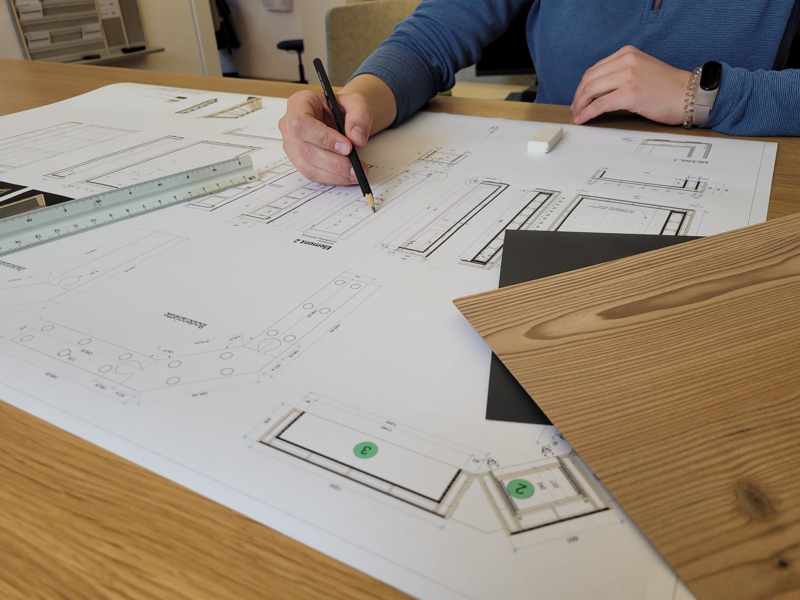

Wir suchen Verstärkung · Mammendorf
Schreinermeister/in (m/w/d)
Arbeitsvorbereitung & Projektleitung
Du weißt, wie aus einer Zeichnung ein gutes Möbel wird. Bei uns bereitest Du die Fertigung vor und begleitest Deine Projekte vom Aufmaß bis zur Montage.
- Arbeitsort
- Mammendorf bei Fürstenfeldbruck
- Dein Schwerpunkt
- Arbeitsvorbereitung & eigene Projekte
- Dein Einstieg
- Meisterabschluss und mehrjährige Berufserfahrung
Deine Rolle bei uns
Gut vorbereitet.
Sauber umgesetzt.
Gute Arbeitsvorbereitung merkt man in der Werkstatt: Maße stimmen, Details sind geklärt und das Material ist da, wenn es gebraucht wird.
Dafür suchen wir Dich. Bei SATIS-FACTORY planst Du die Umsetzung von Objekt-, Laden- und gehobenem Innenausbau. Du stimmst Dich mit Kunden, Planern und unserem Team ab und behältst Qualität, Termine und Kosten im Blick.
Unsere Fertigung liegt direkt vor Ort in Mammendorf. Wenn eine Frage auftaucht, kannst Du sie mit den Menschen klären, die Deine Planung umsetzen.
Unsere Werkstatt kennenlernen →Deine Aufgaben
Vom ersten Maß bis zum fertigen Projekt.
Du bereitest vor, klärst Details und hältst die Fäden zusammen.
Aufmaß & technische Klärung
Du nimmst beim Kunden Maß und klärst Ausführung, Materialien und Anschlüsse mit Kunden und Planern.
Zeichnungen & Stücklisten
Du erstellst Werk- und Detailzeichnungen sowie Stücklisten, mit denen Werkstatt und Montage arbeiten können.
Material & Beschaffung
Du ermittelst den Materialbedarf, stimmst Dich mit Lieferanten ab und organisierst die Beschaffung für Deine Projekte.
Angebote & Kalkulation
Du unterstützt bei Angeboten und Kalkulationen und berücksichtigst den Aufwand für Material, Fertigung und Montage.
Werkstatt & CNC-gestützte Fertigung
Du stimmst Deine Planung mit dem Team ab und setzt Dein Projekt bei Bedarf auch selbst in der Werkstatt mit um – einschließlich CNC-gestützter Fertigung.
Verantwortung für Projekte
Du begleitest Deine Projekte bis zur Montage und behältst dabei Termine, Kosten und die vereinbarte Ausführung im Blick.
Das bringst Du mit
Meisterabschluss und praktische Berufserfahrung.
Du bist Schreinermeister/in und bringst fundierte Erfahrung aus dem Berufsalltag mit: entweder mindestens drei Jahre als Geselle vor der Meisterschule oder mindestens zwei Jahre Berufserfahrung als Meister. Du kennst die Abläufe in der Werkstatt und kannst einschätzen, worauf es bei der Umsetzung ankommt.
- Einen Abschluss als Schreinermeister/in.
- Verständnis für Konstruktion, Materialien und die Abläufe in einer Schreinerei.
- Kenntnisse in CAD und einen sicheren Umgang mit MS Office. Erfahrung mit Vectorworks und interiorcad ist willkommen.
- Eine selbstständige, strukturierte Arbeitsweise und den Blick für Details.
- Die Bereitschaft, Fragen früh zu klären und mit Kunden, Lieferanten und dem Team verbindlich zu kommunizieren.
- Einen Führerschein der Klasse B für Aufmaße und Projekttermine.
- Erfahrung an CNC-Bearbeitungszentren ist gerne gesehen, aber kein Muss.
Wenn Du bisher mit einem anderen CAD-System gearbeitet hast, unterstützen wir Dich bei der Umstellung.
Das bieten wir Dir
Eigene Projekte. Ein Team an Deiner Seite.
Du übernimmst Schritt für Schritt Verantwortung. Bei der Einarbeitung und bei fachlichen Fragen stehen Dir erfahrene Kollegen und Kolleginnen zur Seite.
- Abwechslungsreiche Projekte im Objekt-, Laden- und gehobenen Innenausbau.
- Eigene Fertigung mit großem Maschinenpark und kurzen Wegen zwischen Planung und Werkstatt.
- Ein Team vom Lehrling bis zum Meister.
- Fort- und Weiterbildungsmöglichkeiten.
- Faire Bezahlung und Prämienzahlungen.
- Vermögenswirksame Leistungen und givve-Card als Bonus.
- Deutschlandticket für Pendler/innen im öffentlichen Nahverkehr.
- Arbeitskleidung und hochwertige persönliche Schutzausrüstung.
- Kostenlosen Kaffee und eine Müslibar.
- Parkplätze auf dem Gelände und rund fünf Minuten mit dem Fahrrad ab der S-Bahn Mammendorf.
Dein nächster Schritt
Lernen wir uns kennen.
Schreib uns kurz, was Du bisher gemacht hast und was Du suchst. Deinen Lebenslauf kannst Du direkt mitschicken. Wenn Du vorher Fragen hast, ruf einfach an.
Stellenanzeige als PDF herunterladen
Wie wir mit Deinen Bewerbungsdaten umgehen, erfährst Du in unserer Datenschutzerklärung.